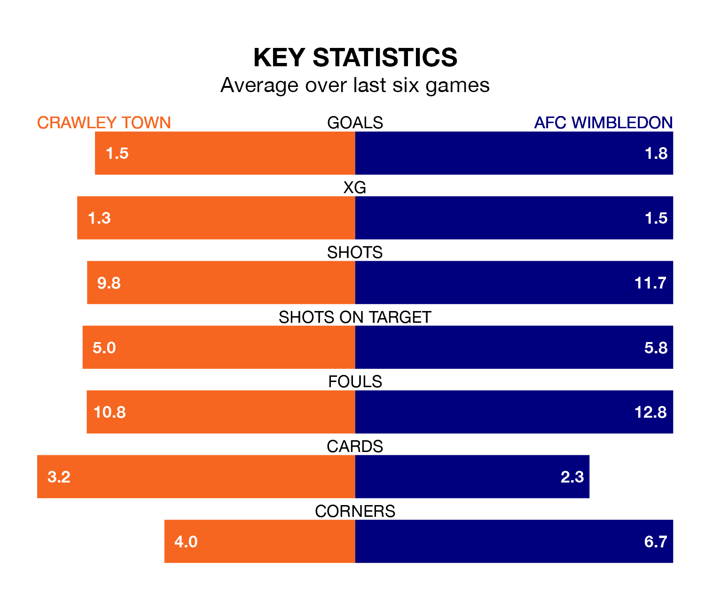

Crawley Town host AFC Wimbledon on Friday at the Broadfield Stadium in EFL League Two.
In their last league match, on Saturday, Crawley lost to Mansfield Town 3-1 at home, with their goal scored by Danilo Orsi-Dadamo.
Wimbledon drew, 0-0 away at Salford City.
In Alex Bass, Wimbledon can rely on one of the league's safest pair of hands. He has kept nine clean sheets in his 21 appearances this season, and no 'keeper has prevented the opposition scoring more often in EFL League Two.
In Crawley's net, Corey Addai has two clean sheets in 15 games. He has conceded a goal every 54 minutes, 70% more often than the 90 minutes between goals for Bass.
With 33 goals in 21 games so far this season, Town are scoring more than average in the league with 1.6 goals per game. But they are conceding more than average too, letting in 37 goals at a rate of 1.8 per game.
The Dons are also above average scorers, with 1.6 goals per game, compared to a league average of 1.5. They have conceded 1.0 goal per game.
The visitors are seventh in the table after 21 games, of which they have won eight and drawn eight, earning 32 points.
The Red Devils are six places behind Wimbledon in 13th, with nine wins and three draws putting them on 30 points.
In the last five years, Crawley and Wimbledon have played each other on four occasions. They won two each.
On average, the Red Devils scored 1.2 goals and the Dons 1.5 in those matches.
Their last meeting was on March 18, when Crawley won 1-0 away.
The home team are in mixed form in EFL League Two, with three wins and three losses from their last six games.
With three wins and a draw over that period, Wimbledon's form is slightly better – they have taken 10 points from 18, compared to Crawley's nine.
Updated: 12:43, 20/12/23